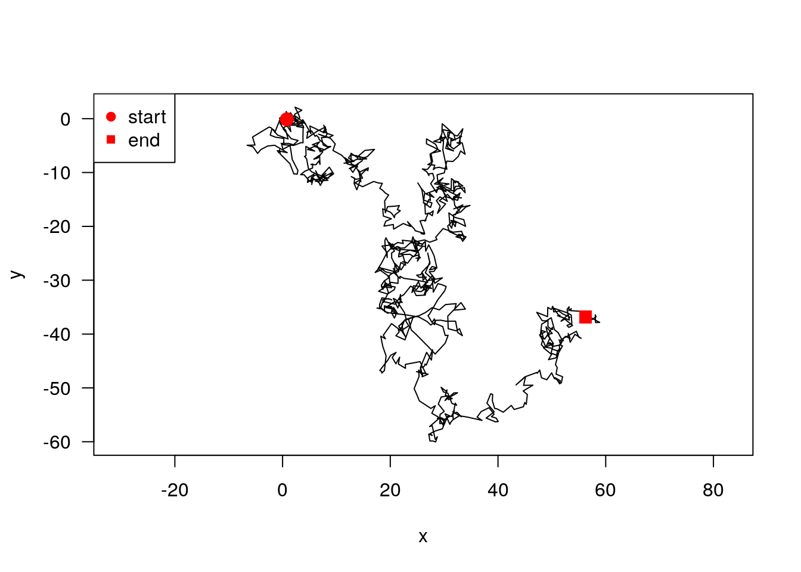
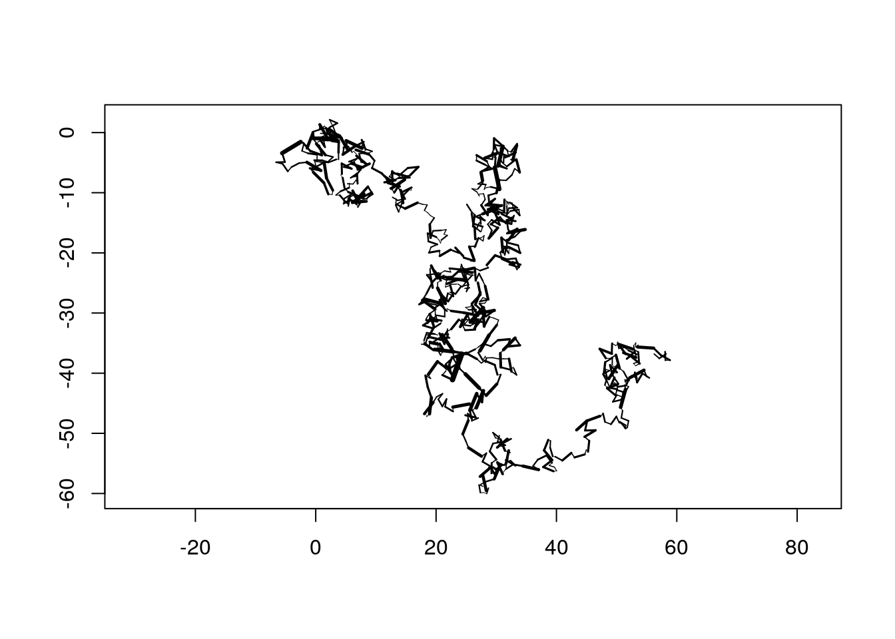
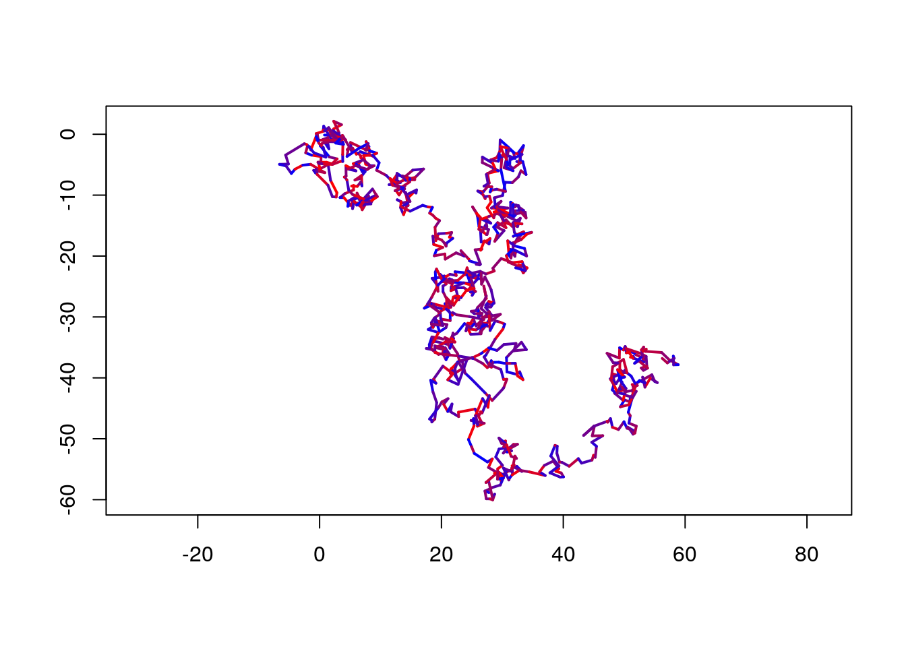
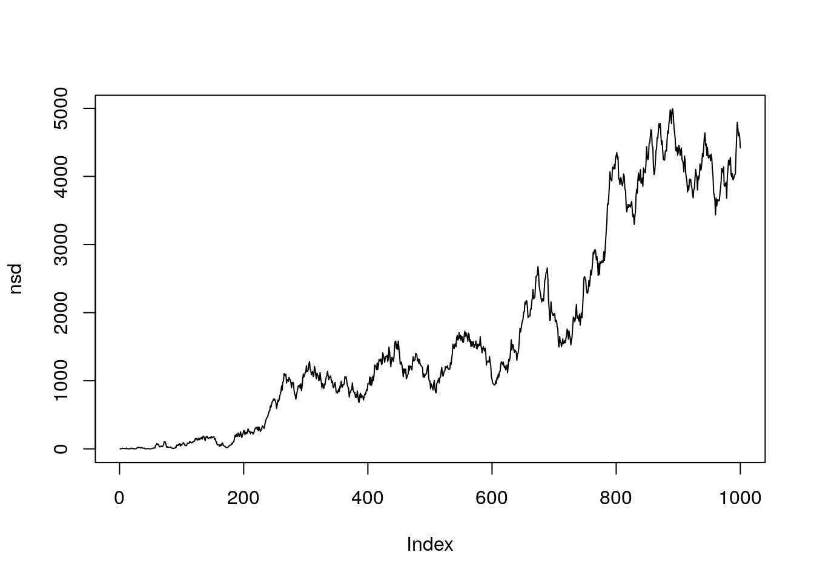

*.csv fileSuppose the relocation data is stored in a *.csv file, we want to load the data into R and create an RhrTrackST object. We will start with simulating some data.
This step can be omitted if you work with your own data.
library(rhr)## Loading required package: Rcpp
## Loading required package: ggplot2
## Loading required package: grid
## Loading required package: rgdal
## Loading required package: sp
## rgdal: version: 1.0-4, (SVN revision 548)
## Geospatial Data Abstraction Library extensions to R successfully loaded
## Loaded GDAL runtime: GDAL 1.11.0, released 2014/04/16
## Path to GDAL shared files: /usr/local/share/gdal
## Loaded PROJ.4 runtime: Rel. 4.8.0, 6 March 2012, [PJ_VERSION: 480]
## Path to PROJ.4 shared files: (autodetected)
## Linking to sp version: 1.1-1
## Loading required package: maptools
## Checking rgeos availability: TRUEset.seed(123321)
# Simulate a random walk
dat <- data.frame(rhrPoints(rhrRW()))
## Save the data as csv
write.csv(dat, file.path(tempdir(), "text.csv"))dat <- read.csv(file.path(tempdir(), "text.csv"))
head(dat)## X ones time x y optional
## 1 1 1 2015-08-14 13:54:00 0.7964754 -0.1335861 TRUE
## 2 2 1 2015-08-14 13:55:00 1.7638547 -0.1846211 TRUE
## 3 3 1 2015-08-14 13:56:00 2.3043202 0.8672620 TRUE
## 4 4 1 2015-08-14 13:57:00 3.5920068 1.5670007 TRUE
## 5 5 1 2015-08-14 13:58:00 2.3148058 2.1317617 TRUE
## 6 6 1 2015-08-14 13:59:00 2.6836096 1.3712519 TRUEIn order to create RhrTrackST object, we need the coordinates as SpatialPoints and parsed time stamps. We will first create SpatialPoints for the coordinates.
coords <- SpatialPoints(dat[, c("x", "y")])Next we need to parse the time stamps, this is most easily done with the lubridate package.
library(lubridate)
ts <- ymd_hms(dat$time)Finally we can create a RhrTrackST object:
track1 <- rhrTrack(coords, ts)
track1##
## ## ======================================================
## ## Object of class RhrTrackSTR
## ## ======================================================
##
## ## Summary
## ## ------------------------------------------------------
## ## Number of relocation : 1000
## ## Missing relocations : 1000
## ## Traj with time : TRUE
## ## Regular track : TRUE
## ## Start : 2015-08-14 13:54:00
## ## End : 2015-08-15 06:33:00
## ## By : 1M 0S
##
## ## Track data
## ## ------------------------------------------------------
## ## x : numeric
## ## y : numeric
## ## sp.ID : integer
## ## time : POSIXct,POSIXt
## ## endTime : POSIXct,POSIXt
## ## timeIndex : integer
## ## ones : integer
## ## ======================================================
##
## ## Segments data
## ## ------------------------------------------------------
## ## x0 : numeric
## ## x1 : numeric
## ## y0 : numeric
## ## y1 : numeric
## ## distance : numeric
## ## duration : numeric
## ## speed : numeric
## ## direction : numeric
## ## ======================================================
## There is plot method for tracks.
plot(track1)
Sometimes it my be desireable to map a certain attribute on the path. In the next example, we will use variable line with as a function of the step length.
trackSeg <- rhrSegments(track1, spatial = TRUE)
library(scales)
plot(trackSeg, lwd = rescale(trackSeg$distance, c(0.01, 4)),
axes = TRUE)
Or we could color segements according to some path characteristic.
cols <- colorRampPalette(c("blue", "red"))(length(trackSeg$distance))
cols <- cols[order(trackSeg$distance)]
plot(trackSeg, lwd = 2, col = cols, axes = TRUE)
We can extract the segments and stat’s there of with rhrSegments:
seg1 <- rhrSegments(track1)seg1 is a data.frame with the start and end point of each segment, time and some basic statistics, such as
We could for example plot the distance that animal moved over time.
plot(rhrTimes(track1)[-1], seg1$distance, type = "l", xlab = "time", ylab = "movement distance")The function rhrNSD allows the calcualtion of the the net square displacement.
nsd <- rhrNSD(track1)
plot(nsd, type = "l")